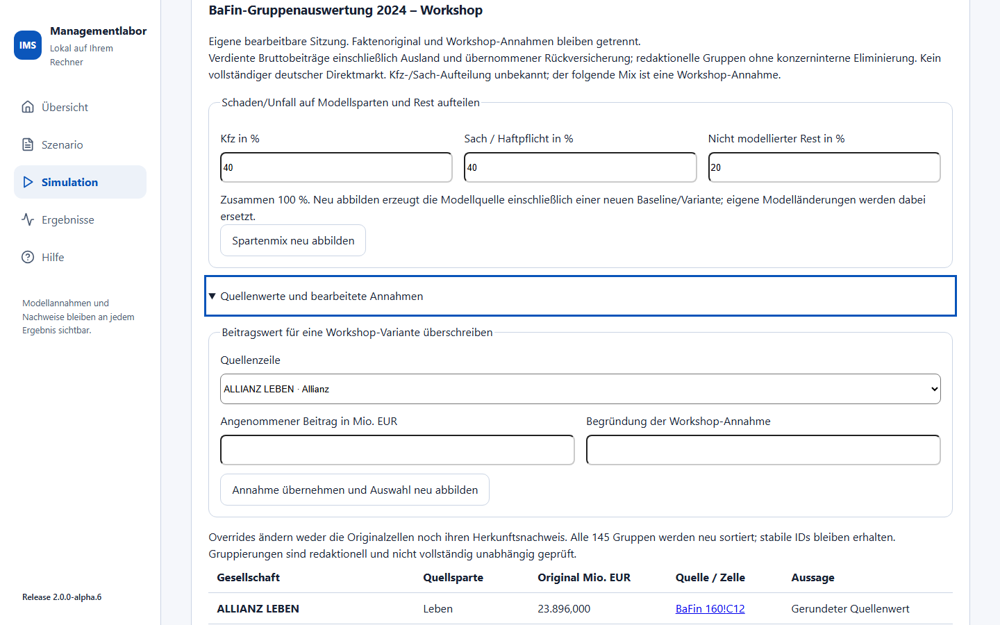
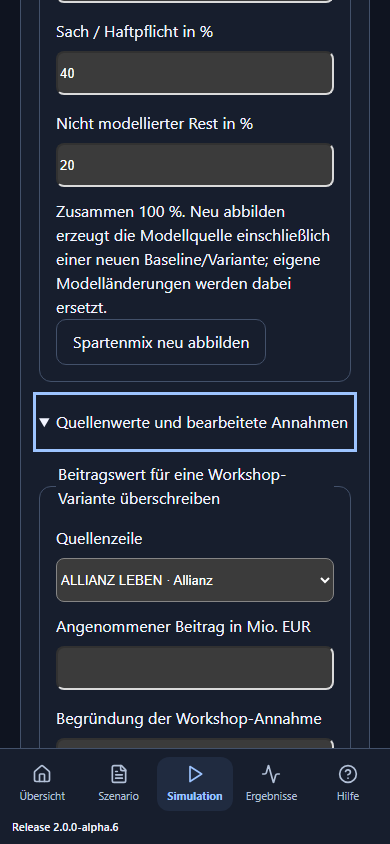

IMS: BaFin-Gruppenauswertung 2024 als Workshop verstehen
AP6 ergänzt einen offline ladbaren Referenzfall mit 40 Gruppennamen. Der Auftraggeber hat diesen beschränkten BaFin-Fall ausdrücklich angenommen. Die Quellen beschreiben verdiente Bruttobeiträge der erfassten Rechtsträger einschließlich Ausland und übernommener Rückversicherung. Ihre Gruppensummen sind redaktionell zugeordnet und konzernintern nicht eliminiert. Das ist keine vollständige Rangliste des deutschen Direktmarkts. Modellperioden sind keine historischen Jahre.
Starten, vergleichen und als eigene Sitzung übernehmen
- Unter Markt und Strategien → Quellen und Handfälle den Marktfall BaFin-Gruppenauswertung 2024 – Workshop wählen. Die bisherigen synthetischen Märkte und Handfälle sind weiterhin verfügbar.
- Zunächst Marktperioden → 10, dann Modellmarkt laden. Das Original öffnet schreibfrei. Die 40 Anbieter sowie Quellenumfang, Nenner und Rest sind schon vor der Simulation sichtbar.
- Gemeinsamen Markt berechnen. Die Auswertung stammt jetzt aus einem frischen gemeinsamen Lauf aller aktiven Modell-VUs. Der Nachweis bindet Faktenoriginal, Annahmen, Baseline, Variante und Ergebnisse.
- Eine Variante verändert ab Periode 6 das Kfz-Angebot der ersten dafür aktivierten Gruppe auf 90 % des Modellpreises. Dies ist eine erklärte Workshop-Strategie; der Firmenname belegt keine tatsächliche Unternehmensentscheidung. Perioden 1–5 bleiben gemeinsam.
- Als eigene Sitzung übernehmen wählen. Erst dann werden Mix, Overrides und Strategien bearbeitbar. Das unveränderte Demooriginal kann jederzeit neu geladen werden.
- Nach einer Änderung das bisherige Ergebnis neu berechnen. Bei geändertem Spartenmix zuerst Spartenmix neu abbilden wählen. Dies erzeugt eine neue Modellvorlage mit Baseline und Variante und ersetzt eigene Modelländerungen.
Die gespeicherte Datei enthält das vollständige Quellenoriginal und eigene Annahmen. Marktquelle als JSON sichern exportiert das frisch geprüfte Bündel. Über Marktdatei öffnen wird es erneut geprüft und gerechnet; alte Ergebniswerte werden nicht als neue Rechnung übernommen.

Was die 40er-Auswahl tatsächlich belegt
Die bereitgestellte Arbeitsmappe enthält 326 Gesellschaften: 80 Leben, 43 Kranken und 203 Schaden/Unfall. Alle Namen, Beträge und Zellbezüge wurden gegen die drei BaFin-Originaltabellen geprüft. Kranken steht ursprünglich in Tausend Euro und wird mit 0,001 in Mio. Euro umgerechnet. Die Gruppenzuordnung ergibt 145 Kandidaten, darunter alle nicht ausgewählten Gruppen. In der Originalauswertung liegt der Münchener Verein mit 877,204 Mio. Euro auf Rang 40 vor Itzehoer mit 843 Mio. Euro auf Rang 41. Der Abstand ist innerhalb dieses Quellenumfangs und dieser Zuordnung gegen konservative Präzisionsgrenzen getrennt. Die historische Kontrolle aller Gruppen ist damit nicht vollständig unabhängig geprüft.
BaFin - bedeutet einen exakten Nullwert. Eine numerische 0 bedeutet unter der Quelleneinheit. Leere oder unbekannte Werte sind kein belegter Nullbetrag. Ein nicht vorhandener Rechtsträger oder Geschäftszweig beweist keine Inaktivität; insbesondere fehlt EWR-Geschäft unter Herkunftsaufsicht in diesem Erhebungskreis. Fehlende tatsächliche Kfz-/Sach-/Rest-Aufteilung bleibt als unbekannt beschrieben.
Gewichte und Rest nachrechnen
| Größe | Betrag | Bedeutung |
|---|---|---|
| Erfasstes Quellenvolumen | 267.483,206 | Alle 326 Rechtsträger der drei geprüften Rangtabellen |
| 40 ausgewählte Gruppen | 254.270,039 | 206 zugeordnete Gesellschaften |
| Nicht ausgewählte Gruppen | 13.213,167 | Quellenvolumen minus 40er-Summe |
| Nicht modellierte Zweige der Auswahl | 23.433,600 | Angenommene 20 % der ausgewählten Schaden/Unfall-Summe 117.168 |
| Modellierte Beitragsbasis | 230.836,439 | 40er-Summe minus angenommener Spartenrest |
Die beiden Restkomponenten überlappen nicht: 230.836,439 + 23.433,600 + 13.213,167 = 267.483,206. Ein Anteil an 254.270,039 verwendet einen anderen Nenner als ein Anteil an 267.483,206. Beide sind Quellenanteile und keine Anteile am gesamten deutschen Direktmarkt. Die Tabellen in IMS nennen die Nenner; spätere berechnete Modellanteile können davon abweichen.
Von Quellenwerten zu erklärten Modellmengen
Der Anfangsmix 40 % Kfz, 40 % Sach/Haftpflicht und 20 % Rest ist für den Workshop angenommen. Tatsächliche Rechtsschutz-, Unfall-, Transport-, Kredit-/Kautions- und sonstige Zweige sind in der breiten Schaden/Unfall-Zahl nicht aufgeteilt. IMS bezeichnet die gewählte Aufteilung deshalb ausdrücklich als Annahme. Ändern Sie die drei Prozentfelder so, dass ihre Summe 100 ergibt. Ein vollständig auf Rest gelegter Nichtleben-Betrag kann eine ausschließlich in diesem Geschäft vertretene Modellgruppe ohne aktiven Rechenkanal lassen; solche Eingaben werden erklärt abgelehnt.
Die anfängliche Skalierung ist 0,01 Modellwährung je Mio. Euro der modellierten Beitragsbasis. Kfz/Sach dividiert das Beitragsziel durch den angenommenen Modellpreis 3; die daraus entstehende Exposition wird auf vier Stellen gerundet. Schadenquote 60 %, Anfangsaktiva gleich Beitragsziel × 100 und Aufnahmekapazität gleich Exposition × 1,25 sind erklärte Annahmen. Weder Beiträge noch Exposition sind recherchierte Kunden- oder Vertragszahlen.
Handfall Allianz: Schaden/Unfall 19.915 Mio. Euro × 40 % = 7.966 Kfz-Basis; × 0,01 = 79,66 Modell-Beitragsziel. Division durch Preis 3 ergibt 26,5533 Exposition. Die erste Prämie ist 79,6599, der angenommene Schaden 47,7959, Anfangsaktiva 7.966. Ohne sonstige Flüsse ergeben sich 7.997,8640 Schlussaktiva. Der Spartenrest ist 19.915 × 20 % = 3.983 Mio. Euro; er wird nicht zusätzlich als Modellprämie gebucht.
Leben nutzt eine ausdrücklich deklarierte Modellpolice je aktivierter Gruppe und den bestehenden begrenzten Anlage-/Bestandskanal. Prämien, Kapital und Garantieverbindlichkeit werden aus dem Beitragsziel als Workshop-Größen abgebildet. Kranken nutzt 100 deklarierte Anfangspolicen und einen eigenen erklärten Preis pro Police; Neugeschäft und Abgänge sind im Ausgangsfall null. Es entsteht keine neue Lebens-Nachfrage oder ICT-Kopplung. Bilanzen bleiben je Sparte getrennt; diese Abbildung ist keine Kalibrierung.
Quellenwerte bearbeiten, ohne die Herkunft zu verlieren
Nach Übernahme als eigene Sitzung Quellenwerte und bearbeitete Annahmen öffnen. Einen Rechtsträger wählen, angenommenen Beitrag in Mio. Euro und Begründung eintragen. Annahme übernehmen und Auswahl neu abbilden sortiert alle 145 Gruppen erneut und erzeugt die neuen 40 Modellanbieter. Ein Override wird sichtbar als Workshop-Annahme ausgewiesen. Die Originalzelle, ihr Rohwert und ihr Quellenlink bleiben erhalten. Modell-IDs hängen nicht vom Rang ab.
Handfall: Ein ausdrücklich angenommener Schaden/Unfall-Beitrag von Itzehoer mit 1.000 Mio. Euro bringt diese Gruppe in die Auswahl. Der Münchener Verein fällt in diesem Handfall heraus. Das ist eine bearbeitete Annahmenrangfolge und keine neue belegte Branchenrangliste. Direkt bearbeitete Originalkataloge werden abgelehnt; dokumentierte Overrides sind der dafür vorgesehene Weg.
Über Quellen und vollständige Eingaben bearbeiten können erfahrene Anwender außerdem die vollständige Modellquelle ändern. IMS zeigt dann Eigene Modellquelle, wenn sie von der aus Quellengewichten erzeugten Vorlage abweicht. Quellengewichte bleiben recherchierte bzw. überschrieben erklärte Ausgangswerte; Modellmengen und Bilanzen werden dadurch nicht rückwirkend zu recherchierten Fakten. Unpassende Gruppenidentitäten, unvollständige Verträge oder ungültige Bilanzen liefern kein Teilergebnis.
Einzel-VU nach Excel und Quellenbindung prüfen
- Nach frischer Rechnung einen Anbieter unter Anbieter für Variante und Einzel-VU-Excel wählen.
- Einzel-VU … in Excel exportiert die gemeinsamen Laufzeilen dieser Modell-VU für Baseline und Variante.
- BaFin-Quellenwerte enthält die zugeordneten Originalgesellschaften, Rohwerte, Einheiten, Zellbezüge, Quellen-URLs und Hashes. Workshop-Annahmen enthält Mix, Skalierung, Overrides, Gewichte und Rest.
- Herkunft enthält Nachweise sowie die vollständige Modellquelle und das Referenzbündel in nummerierbar zusammensetzbaren Textabschnitten. Der Export verlangt denselben unveränderten Nachweis; ein alter Nachweis nach Änderungen wird abgewiesen.
Die Ergebnisse sind Modellwährung. Die Faktenblätter nennen Mio. Euro ausdrücklich. Text aus Namen und Quellen wird als Text exportiert, nicht als ausführbare Excel-Formel.

Fragen der vier Rollen
- CEO: Welcher Nenner steckt hinter einem Anteil, welche Quellen deckt die Auswahl ab und welcher Rest fehlt im Lauf?
- CSO Vertrieb: Welche Modellkohorten wechseln nach der angenommenen Preisantwort, und welcher Träger erhält Prämie und Risiko?
- COO: Was begrenzen die erklärte Aufnahmekapazität und die einmal gebuchten Maßnahmenkosten?
- CIO: Welche ICT-Abhängigkeiten sind tatsächlich spezifiziert? Dieser Referenzfall enthält noch keinen gekoppelten ICT-Schock; ein Gruppenname belegt keinen Provider.
Bestehende Markt-/Strategie-Handfälle und Begriffe · Geführter Einstieg